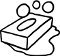

Dört bir yanı sinsice kaplayan buhar perdesinin içinde ayağım kaymadan ilerlemeyi başararak en nihayetinde kapının yanında alıyorum soluğu. Ama kapı ağır ve demirden, öylesine canlı ki sanki etten ve kemikten. Kapı kapalı. Var gücümle asılıp tokmağına, kendime doğru çekiyorum heyula kanadını. Açılmasa da tastamam, aralanıyor işte az biraz, olsun zaten bu kadarı yeter. Usulca uzatıyorum altı yaşımın başını o aralıktan. Rahat bir soluk alıyorum. Ne olur ne olmaz, sağlama alabilmek için aralığı, bir de gümüş tas koyuyorum kapının arasına. Tas ayaklarımın altında, ayaklarım da eşikte dursun ki, bu devasa kapı henüz işlenmemiş günahlara biçilmiş bir ceza gibi haksızca kapanmasın bir daha üstüme üstüme. Burnum dışarıda, gövdem içeride özgürlüğü soluyorum. Gümüş renginde, gümüş ışıltısında adına "özgürlük" denilen o canım cevher, doluyor içime o incecik aralıktan bile. Oysa "eşiklere basma" diyor anneannem, "binalar insanlara, eşikler cinlere bahşedilmiş bu âlemde." Ama şimdi ben, bilmezden gelerek öğrendiklerimi, afiyetle kulak ardı edeceğim bu gizemli nasihati. Şimdi tek istediğim nefes alabilmek, ötesinde yok gözüm. Kaçmak da mümkün buradan elbette, ama benim istediğim kaçmak değil ki. Ne varmayı arzuladığım bir öte diyar, ne de bir yerlerde bıraktığım kayıp bir cennetim var. Sadece çıkmak istiyorum. Çıkmak da değil, çıkabilmek. Ben o ihtimali seviyorum, seçeneğim olmasını, kapının aralık kalmasını. Durmuşum bir eşikte, ne bir adım geri ne bir adım ileri, uzatmışım kafamı aralıktan dışarı, sırtımı dönmüşüm o cehennem sıcağına, mutlu mesut, çocuk çocuk soluklanıyorum serinlikten, ötesi gerisi ne gam. Ta ki bir kadın sesi gürleyinceye kadar arkamdan:
"Evladım kapasana şu kapıyı, dondurdun valla hepimizi... Ayol kimin çocuğu bu? Alın şu çocuğu oradan. Buz gibi oldu hamamın içi!"
Buharın içinden çıkıveriyor yusyuvarlak, çırılçıplak kadın gövdeleri. Her biri bembeyaz, çığırtkanca beyaz. Daha ne olup bittiğini anlayamadan, derdest edilip uzaklaştırılıyorum cinlerin eşiğinden. Kapı bir kez daha kapanıyor ardımdan.
Çocukluğumun kâbusuydu kadınlar hamamı. "Kâbus" dediysem lafın gelişi değil, okurun merakını çimdiklemek niyetiyle değil, yani kâbus dediysem öyle böyle değil, ben dört ila altı yaş arasında ne vakit sürüklendiysem o meşum mekâna, öldüm ve dirildim, dirildim ve öldüm orada. Ölümden ziyade ölümsüzlüktü aslında beni böylesine korkutan. Sonsuza kadar kapalı kalmak orada, "ebedi tekerrür"e hapsolmak, henüz Nietzsche ile tanışmamış olsam da. Ben o som beyazlığın, nedense hep bir tatlıyı ve nedense ekseriya tarçınlı muhallebiyi çağrıştıran mermer oturakların, kubbede katlanarak yankılanan seslerin, derimi pütür pütür kaldıran dayanılmaz sıcağın, kılsız arsız kadın çıplaklığının ve ardı arkası kesilmeyen su damlacıklarının arasında ölümsüzlüğe mahkûm edilmekten korkuyordum ölesiye. Ya arkamdan kapanırsa hamamın kapısı ve açılmazsa bir daha asla? Ya çıkamazsam buradan? Ha gayret, kimse fark etmeden, kaymamaya gayret ederek adım adım, gümüş tas koltuğumun altında, yeniden bir sefer kapıya doğru, yeter ki aralık kalsın azıcık, yeter ki çıkabileyim olur da çıkmak istersem şayet... Sonuçta, nice kadını hayli kızdırmayı başarmış olmalıyım ki, bizimkiler de vazgeçmek durumunda kaldılar beni kadınlar hamamına götürmekten.
O gün bugündür bir Yezidi kadar ürkerim etrafıma çıkışsız çemberler çizilmesinden. Edebiyatı, benlik ve bellek kuşatmalarındaki gedikleri için sevdim en çok. Yolların kendine çıktığı dönemeçlerde, insanı azar azar, usul usul kurutarak öldüren tekerrürlerde dehlizler kazdığı için... Edebiyatçılığın kendisi başlı başına bir kuşatmaya dönüştüğünde de, benzer gedikler açmaktan yanayım yazarlık çemberinde. Yeter ki bir çıkış kapısı olsun yakınımda bir yerlerde.
Cinler mi? Zamanla öğrendim ki, hakkı varmış anneannemin. Hakikaten eşikte yaşarmış cin taifesi, doğru. Doğru ama eksik. Binalar insanlara ve beşeri alışkanlıklara, eşikler cinlere ve alicengiz oyunlarına, çıkışlar ise gümüş taslara mekân imiş bu âlemde. Bu yüzden, işte salt bu yüzden, adına "yaratıcılık" yahut "esriklik" veya "hayal gücü" denilen o dipsiz hudutsuz derya, ne binalarda mümkün ne de kapalı kapılar ardında.
Özgürlük, çıkış kapılarının gümüşi aralığında.
İstanbul